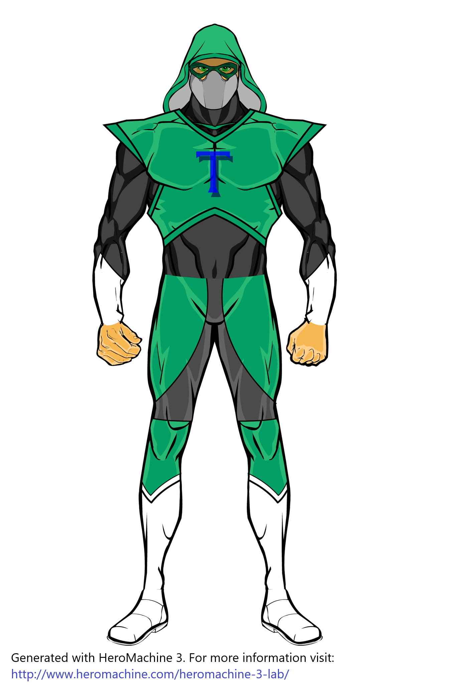
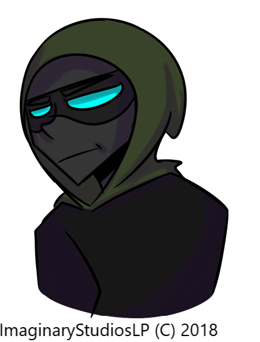

THUNDERMAN
| Real name | Lazar |
| Type | Human |
| Gender | Male |
| Powers | Weather control (can create small tornado, drought, flood, lightnings, strong wind and ice) |
| Height | 188cm / 6.16 feet |
| Weight | 90kg |
| Eye color | Green |
| Team | The Superhero Community (former), Infinity Team (current) |
ddddddddddddddddddddddddd
Story:
Thunderman (then Lazar) was a scientist who had worked on a special electric machine to create a cheaper way of generating energy. He had worked with two of his friends. The machine was not ready for use, but the investors wanted to see the progress. His friend Marco turned on the machine and machine started to generate an electric field around Lazar, Marco, and George (another friend). The machine was about to explode (the explosion of that energy could collapse the building in which it was located). Lazar knew that there was a way to turn off the machine manually, but it would mean that machine would drop a lower amount of energy, still strong enough to kill people around it. If the machine explodes, they and the rest of the people in the building will be surely dead. Lazar thought that by this way he can, at least, save the rest of the people in the building. He ran into the electric field, managed to shut down the machine, but three friends were hit by the electric field and all three fell on the ground. A mysterious light appeared at the moment before they lost their lives. That mysterious light saw something in them and brought them back to life. They got a second chance - the task of protecting those who can not protect themselves.
ddddddddddddddddddddddddd
Images
 
ddddddddddddddddddddddddd
*Note: The first picture is to be used only as a reference image.